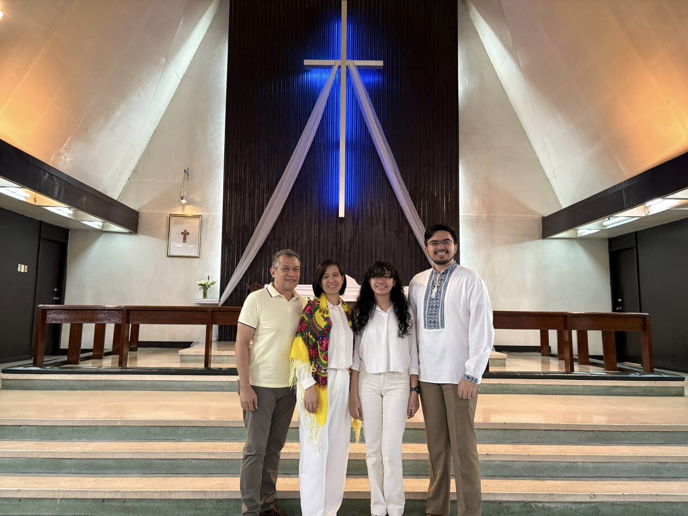

Should I Stay or Should I Go?
Deryn (Grade 9) | Homeschooling Since 2020

The onset of the COVID pandemic brought uncertainty in a multitude of aspects, one of which was education. With that, BCI Marikina had offered two education programs: the Berean Blended Learning Program (BBLP), a synchronous, online, and in-person learning program led by the teachers; and Berean Homeschool (BHS), an asynchronous, modular learning program led by the parents with the assistance of a family coach.
My family had no prior experience in homeschooling, nor did we have a set idea on its systems. Although, we still opted for homeschooling, as BBLP initially offered a mix of in-person and online classes, which posed health concerns regarding the in-person aspect. (However, BBLP eventually became a fully online program.)
As I continued homeschooling, my perception and ideas of it grew deeper. It was not just about the flexibility, but rather the vast avenue of opportunities that came along with it. With the extra time I had, I was able to learn different skills such as graphic design, web design, video editing, programming, Spanish (though I forgot a lot of it), and perhaps a couple more I have forgotten about. I also got to return to skills and hobbies I had forgotten about, like reading, writing, and playing musical instruments. Additionally, my social connections also grew deeper. I formed deeper bonds with my family members over time spent at home. I also formed deeper bonds with my friends over time spent playing video games and video calls. Most importantly, my spiritual bond with God had also grown as I read the Bible and learned more about Him.
On the second year of my homeschooling journey and my graduating year of elementary, I was introduced to Ms. Peej Isiderio, the family coach and head of the BHS department. I was also introduced to the concept of a Bloom Review, a quarterly assessment in the form of a creative presentation containing various creative projects and performance tasks that highlight a student's learning for the given quarter. The Bloom Review excited me as it gave me an opportunity to express myself and my creativity, and it also gave me an opportunity to form a bond with Ms. Peej, too.
Because it was my final year in elementary, I decided to take my chances and apply for two of my desired high schools. I figured that transferring to either of those two high schools would expand my opportunities. While I did not pass one of the high schools, I had passed the other. Receiving that acceptance email on that fateful day brought an indescribable sense of joy, especially having the support of my family and my BCI community.
The weeks passed, and I finally completed my elementary school at BCI. I said my farewells to my BCI community, initially marking the end of my BCI chapter and the transition into my high school chapter.
My first year of high school was a mental and emotional rollercoaster as I adjusted to my new environment. It was a thrill for me to return to in-person classes, to meet new people, and to take on new challenges and opportunities. Although, as I spent more time in the institution, I began to feel unsatisfied with how my journey was going. While I enjoyed the opportunities and the company I had, I felt unsatisfied with the school's system and curriculum. I felt like my potential was not fully utilized in the competitive, uncertain environment. I wanted to return to BCI, but I also did not want to leave the opportunities I had in the high school. I felt stuck, repeatedly asking myself the same question: should I stay or should I go?
In the second half of the school year, I began praying fervently to God, asking Him for guidance in my predicament. My evenings were spent asking God for guidance, and my mornings were spent asking God for strength to get me through the day. I felt tired, drained, and confused. Both schools came with their strengths and weaknesses, so which one was better?
One day, I called Ms. Peej over the phone, asking her for advice regarding my quandary. Ms. Peej patiently listened as I expressed my frustrations and sentiments regarding the situation, struggling to hold back my tears. I silently cried as she prayed over me, desperate for God to answer my prayer.
Eventually, God did answer my prayer. I was overcome with the conviction of returning to my school year. My family was supportive of my decision, and we started inquiring about admission details for the upcoming school year. With each day getting close to the end of my high school freshman year, I felt a weight being lifted off my chest. I felt free again.
A school year has passed since that period of my life. This upcoming school year would mark my fourth year of homeschooling and my ninth year of studying at BCI Marikina. For the past school year, I was a BHS Representative for the Berean High Council, a Photo Editor for the Berean Yearbook Committee, a cast member of BCI's Back to The Manger, a member of the BCI Taekwondo Department, and a participant in the February 2024 GEMA International Story Writing Competition. I was also involved in helping Ms. Peej with a few BHS-related projects!
Some of my friends had asked me why I returned to BCI, and some of them had asked why I chose homeschooling instead of onsite classes. The answer is simple: I was called to homeschool. The Lord has been kind to me throughout my homeschooling journey, and I have been presented with opportunities I never throught I would have. As said in Jeremiah 29:11, "For I know the plans I have for you,' declares the Lord, 'plans to prosper you and not to harm you, plans to give you hope and a future.'" While God initially called for me to have in-person classes on my first year of high school, He eventually called me once again to continue my high school journey as a homeschooler.
In hindsight, what initially was a challenge for me became a blessing. God gives us challenges and trials not only because He knows we can handle it, but it is also so we may strengthen our faith and trust in Him. Throughout our dark moments, we must remain faithful in God and trust in His plans.
No matter how bleak our situation may be, God will always shine a light for us.